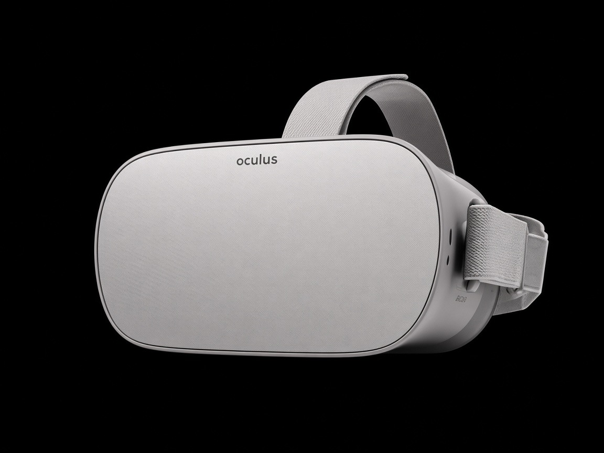
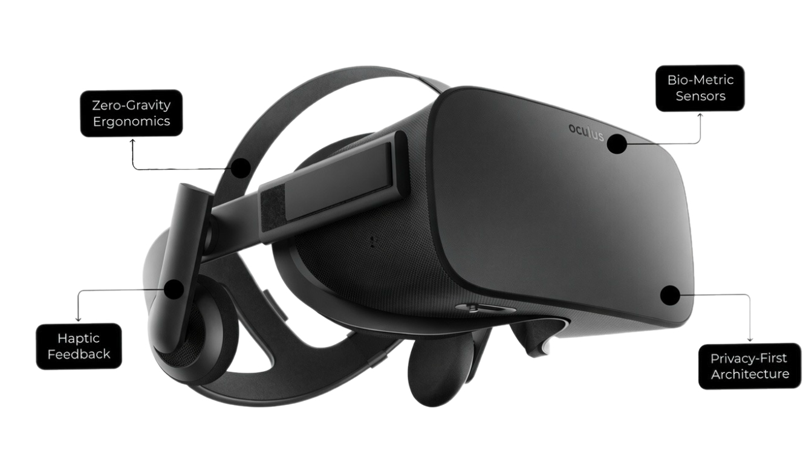

"The best way to predict the future is to invent it."
— Alan Kay
Virtual Reality (VR) is often perceived as a breakthrough of the 21st century,
driven by modern advancements in smartphone manufacturing, micro-displays,
and high-performance graphics processing units (GPUs). However,
the conceptual roots of immersive artificial environments stretch back decades
before the advent of consumer-grade headsets. Understanding the current technological landscape
requires tracing the evolution of VR from mechanical prototypes to sophisticated, computer-generated
stereoscopic simulations.
The Precursors to Modern VR
The desire to trick human perception into believing in a synthetic reality dates back long before electronics. Panoramic paintings of the 19th century were designed to fill a viewer's entire field of vision, surrounding them with a continuous narrative scene to induce a sense of presence. However, the true technological lineage of head-mounted displays (HMDs) began in the mid-20th century.
In 1962, cinematographer Morton Heilig patented the Sensorama, a mechanical arcade-like cabinet that engaged multiple human senses simultaneously. The Sensorama provided stereoscopic 3D visuals, body tilting, stereo sound, wind generators, and even olfactory actuators that emitted aromas matching the scene (such as exhaust fumes or sea breeze). While not interactive by modern computational standards, it established the foundational philosophy of VR: immersive multisensory simulation.
Shortly thereafter, in 1968, computer scientist Ivan Sutherland, alongside his student Bob Sproull, created what is widely recognized as the first true head-mounted display system. Dubbed "The Sword of Damocles" due to its immense physical weight, the display was suspended from the ceiling by a mechanical arm because computers of the era could not render wireframe graphics quickly enough to be worn comfortably on the head. This device tracked the user's head position mechanically and optically, updating the computer-generated perspective in real-time—a direct precursor to modern head tracking.
From Military Research to Sci-Fi and Early Commercialization
Throughout the 1970s and 1980s, VR development was largely confined to military, aerospace, and academic laboratories. Institutions like NASA utilized early spatial displays for astronaut training, simulation of zero-gravity extravehicular activities, and remote robotics control.
The term "Virtual Reality" itself was popularized in the mid-1980s by Jaron Lanier, founder of VPL Research, a company that commercialized some of the earliest VR peripherals, including the Data Glove and the EyePhone HMD. During this period, popular culture embraced the concept, sparking immense public fascination. However, the technology of the late 1980s and early 1990s suffered from severe hardware limitations:
Computational Bottlenecks: Central Processing Units (CPUs) lacked the raw floating-point performance required to calculate complex polygon meshes at interactive frame rates.
Display Deficiencies: Cathode-ray tube (CRT) and early liquid-crystal display (LCD) panels were heavy, bulky, possessed low resolutions, and exhibited unacceptable motion blur.
Prohibitive Costs: Professional systems cost hundreds of thousands of dollars, restricting them strictly to enterprise and research sectors.
The subsequent commercial failure of consumer attempts in the mid-1990s—such as Nintendo’s Virtual Boy—led to an era known in the industry as the "VR Winter," during which research slowed significantly outside of niche defense and medical simulations.
The Contemporary Renaissance
The modern era of VR was catalyzed in 2012 by the advent of accessible, high-density mobile phone components. The proliferation of smartphones drove mass production of lightweight, high-resolution OLED and LCD panels, highly sensitive micro-electro-mechanical systems (MEMS) gyroscopes and accelerometers, and energy-efficient system-on-chips (SoCs). By repurposing these mass-market components, innovators were able to build high-performance, low-cost headsets that eliminated the traditional barriers to entry, paving the way for the immersive ecosystems we use today.

The apex of immersive engineering

As we delve deeper into the core architecture of immersive technology, it is essential to examine the foundational layers that make these systems operational. The following sections provide a comprehensive exploration into the underlying mechanics, classifying the diverse hardware frameworks, examining advanced optical engineering principles, and highlighting how these technological advancements successfully translate into real-world applications across various disciplines.
As we explore immersive technology, the following sections examine the underlying mechanics, hardware classifications, and optical principles, highlighting their practical application across various industries.
Technical Architecture and Hardware Mechanics of Modern VR Systems
Building a convincing virtual environment requires solving complex engineering challenges across optics, computer graphics, sensor fusion, and human-computer interaction. Unlike traditional flat-panel displays, where the viewer maintains a fixed perspective outside the screen boundary, a Head-Mounted Display (HMD) places the displays centimeters from the eyes, demanding sub-millimeter precision and ultra-low latency processing.
Optical Systems and Visual Engineering
The primary challenge in VR optics is focusing high-resolution micro-displays that sit immediately in front of the human eye. Because the human eye cannot naturally focus on an object placed just two centimeters away, specialized lenses are inserted between the screen and the eye to refract light rays, allowing the user to focus comfortably at a perceived infinity.
Feature / Metric
Fresnel Lenses
Pancake Lenses
Profile & Thickness
Bulky, thick circular ridges
Ultra-thin folded optics
Optical Clarity
Good, prone to "god rays"
Superior edge-to-edge sharpness
Light Efficiency
High light transmittance
High light loss (requires brighter backlight)
Fresnel Lenses: Traditional spherical glass lenses are thick, heavy, and introduce severe optical aberrations. To reduce weight and thickness, modern headsets frequently utilize Fresnel lenses. These lenses collapse a thick continuous curvature into a series of concentric, ridged ring steps. While they significantly lower the headset's physical profile and manufacturing cost, they can produce circular artifacts or light diffraction patterns known as "god rays" in high-contrast scenes.
Pancake Lenses: Representing the next evolution in optical engineering, pancake lenses use folded optics (polarization-based beam splitters) to bounce light back and forth internally before reaching the eye. This allows for a dramatically thinner headset profile and superior edge-to-edge optical clarity, though at the cost of significant light loss, requiring brighter backlighting.
Refresh Rates and Persistence: To maintain visual fluidity, displays must operate at high refresh rates—typically ranging from 90Hz to 144Hz or higher. Furthermore, low-persistence displays use strobed backlighting or rapid pixel flashing to eliminate motion blur during rapid head movements, preventing the visual smear common in older display technologies.
Positional Tracking and Spatial Computing
A critical requirement for presence is accurate spatial tracking, ensuring that when a user moves their head, the virtual camera updates instantaneously.
Degrees of Freedom (DoF)
System Type
Tracked Axes
Typical Use Case
3DoF
Rotation only (Pitch, Yaw, Roll)
Legacy or budget media viewers
6DoF
Rotation + Translation (XYZ movement)
Immersive modern VR gaming and simulation
3DoF Systems: Track rotational movement only (pitch, yaw, and roll—looking up, down, left, right, and tilting the head). These are characteristic of older or budget viewer attachments.
6DoF Systems: Track both rotation and spatial translation (moving forward, backward, left, right, up, and down in physical space).
Inside-Out vs. Outside-In Tracking
Modern standalone and PC-connected HMDs predominantly rely on inside-out tracking. Multiple wide-angle cameras embedded directly into the chassis of the headset observe the physical environment, using computer vision algorithms and Simultaneous Localization and Mapping (SLAM) to calculate the device's precise coordinates in real-time. In contrast, outside-in tracking utilized external infrared cameras or lighthouses placed around a room to monitor active or passive markers on the headset and controllers.
Inertial Measurement Units (IMUs)
High-frequency MEMS gyroscopes and accelerometers embedded within the HMD measure linear acceleration and angular velocity thousands of times per second. Because camera-based computer vision tracking can introduce slight computational delays, sensor fusion algorithms combine fast, high-frequency IMU data with slower, drift-corrected camera tracking to achieve instantaneous motion updates.
Latency Optimization: The Battle for Motion-to-Photon
Motion-to-photon latency—the total time elapsed from a physical head movement to the corresponding change in pixels illuminating the user's retina—is the single most important metric in VR engineering. If this latency exceeds approximately 20 milliseconds, the brain detects a temporal mismatch between vestibular signals (inner ear balance) and visual input, triggering severe cybersickness (dizziness, nausea, and disorientation). To mitigate this, engineers employ advanced rendering techniques:
Asynchronous Reprojection (SpaceWarp)
If the graphics processing unit (GPU) fails to render a new frame within the required window (e.g., missing a 90Hz deadline), the system intercepts the previously rendered frame and warps its pixels based on the latest IMU head movement data just milliseconds before display output. This maintains a stable frame rate and masks micro-stutters.
Foveated Rendering
Human visual acuity is exceptionally sharp only within the small central region of the retina known as the fovea, while peripheral vision is low-resolution. Modern headsets equipped with infrared eye-tracking cameras implement foveated rendering, rendering the exact spot the user is looking at in full resolution while drastically reducing the graphical rendering workload for the peripheral regions, freeing up immense GPU performance.
Industrial and Practical Applications of Virtual Reality
While consumer entertainment and gaming remain the most visible vectors for VR adoption, the technology's transformative impact is most pronounced in professional, industrial, educational, and medical fields where safety, cost efficiency, and spatial visualization are paramount.
Medicine, Healthcare, and Surgical Training
Virtual reality has fundamentally shifted medical education and clinical practice by providing risk-free, highly repeatable environments for complex procedures.
Surgical Simulation
Medical students and resident surgeons utilize high-fidelity haptic VR simulators to practice intricate procedures—such as neurosurgery, laparoscopy, and orthopedic reconstruction—on patient-specific digital twins before operating on living tissue.
Rehabilitation and Physical Therapy
VR systems combined with motion capture are deployed in neurological rehabilitation, helping stroke survivors or patients with traumatic brain injuries retrain motor pathways through gamified, repetitive physical tasks.
Psychological Therapy and Exposure
Clinical psychologists use controlled virtual environments for Exposure Therapy, successfully treating post-traumatic stress disorder (PTSD), severe phobias, and social anxiety disorders by safely reintroducing patients to triggering stimuli within a clinical setting.
Aerospace, Defense, and Heavy Engineering
Industries dealing with expensive machinery and hazardous operational conditions leverage VR for design validation and workforce training.
Prototyping and Computer-Aided Design (CAD)
Automotive and aerospace engineers inspect full-scale 3D digital prototypes of aircraft engines or vehicle chassis collaboratively in virtual space long before physical manufacturing begins, identifying ergonomic flaws, wiring conflicts, or structural inefficiencies early in the pipeline.
Mission and Hazard Training
Military organizations and emergency response teams simulate high-risk scenarios—such as urban combat operations, firefighting in enclosed spaces, or emergency evacuation procedures aboard naval vessels—without risking personnel or equipment.
Education and Remote Collaboration
In academic settings, VR transcends the limitations of two-dimensional textbooks by providing experiential, constructivist learning methodologies.
Virtual Field Trips and Immersive Science
Students can explore microscopic cellular structures, walk across the surface of Mars, or examine reconstructed historical sites in scale-accurate 3D, boosting information retention and engagement.
Spatial Remote Work
Enterprise teams dispersed globally collaborate within shared virtual workspaces, reviewing 3D architectural models, circuit boards, or data visualizations as if standing together in a physical boardroom, overcoming the flat-screen constraints of traditional video conferencing.
Challenges, Technical Limitations, and Future Horizons of Virtual Reality
Despite remarkable strides in micro-display manufacturing, optical design, and spatial computing algorithms, virtual reality still faces several formidable technical and physiological roadblocks that prevent it from achieving absolute ubiquity and seamless integration into daily life.
Physiological Limitations and Cybersickness
The human sensory apparatus has evolved over millions of years to function in a physical world governed by Newtonian physics. When these finely tuned evolutionary mechanisms are decoupled in virtual reality, physiological distress frequently occurs.
Vergence-Accommodation Conflict
In the natural world, when a human focuses on an object close to them, their eyes converge (turn inward) and simultaneously accommodate (the crystalline lens changes shape to focus light). In stereoscopic VR headsets, the display panel remains at a fixed physical distance (e.g., a few centimeters from the eyes), meaning the eyes accommodate to a static focal plane while converging on virtual objects at varying depths. This persistent neural mismatch causes eye strain, fatigue, and headaches during extended use.
Vestibular-Visual Mismatch
When an artificial locomotion system moves a user through a virtual world via a handheld joystick while their physical body remains seated or standing completely still, the eyes report motion while the inner ear reports stationarity. This sensory conflict is a primary trigger for nausea, sweating, and dizziness.
Form Factor and Thermal Constraints
Engineering a standalone VR headset requires packing the computational power of a modern gaming console or high-end smartphone into an enclosure weighing less than 500 grams, balanced evenly across the user's face.
Thermal Dissipation
High-performance mobile processors and GPUs generate substantial heat under sustained workloads. Because active cooling fans add weight, consume precious battery life, and introduce mechanical noise, manufacturers rely primarily on passive cooling through custom vapor chambers and graphite sheets, which inherently throttle performance to prevent overheating.
Battery Density
Lithium-ion battery technology has plateaued in energy density gains. Current standalone headsets typically offer between 1.5 to 3 hours of continuous untethered use before requiring a recharge, limiting their viability for prolonged enterprise or educational sessions.
The Next Frontier: Micro-LEDs, BCI, and Holography
Looking toward the next decade, ongoing research and development aim to dismantle these persistent hardware boundaries through paradigm-shifting technologies:
Micro-LED Displays
Offering extreme brightness levels exceeding millions of nits, near-zero latency, and exceptional energy efficiency, Micro-LEDs will enable ultra-compact optical stacks without the severe light-loss penalties inherent to current pancake lens designs.
Brain-Computer Interfaces (BCIs)
Non-invasive neural interfaces, utilizing surface electromyography (sEMG) bands worn on the wrist, are beginning to translate subtle neuromuscular impulses into instant digital actions, bypassing physical controllers entirely and enabling seamless micro-gestural input.
Light Field Displays
Addressing the vergence-accommodation conflict directly, emerging light field and holographic display prototypes project true three-dimensional light waves into the eye, allowing natural optical focusing without artificial lenses.